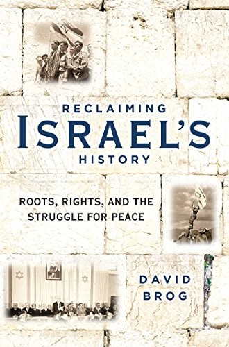
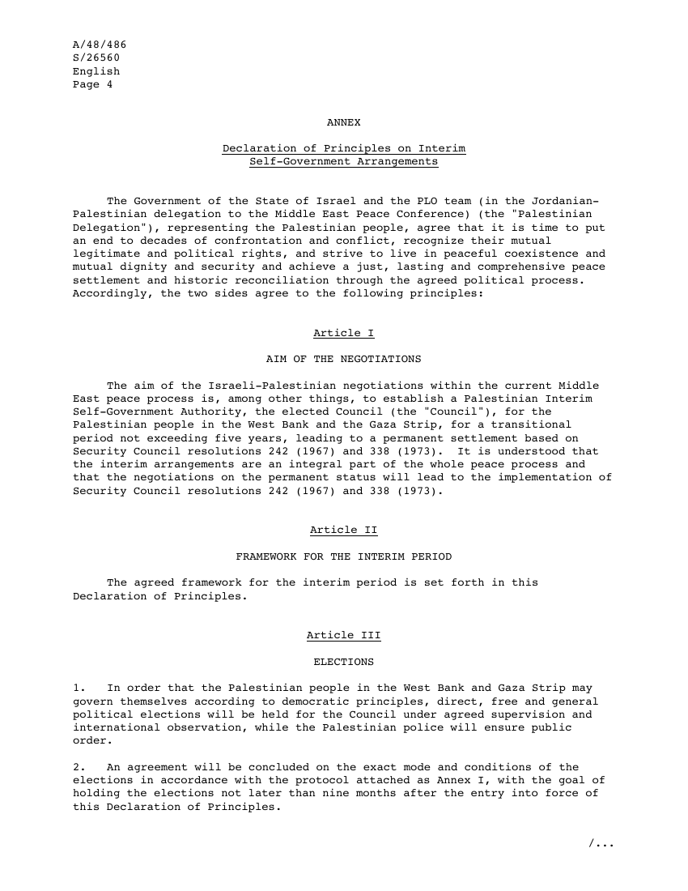

36:24 · 3 OPERE
David Brog, author of "Reclaiming Israel's History," debunks the three biggest lies against Israel.
Il filo del discorso
Nell’intervista in inglese, Stefan Thompson chiede a David Brog di discutere tre accuse rivolte a Israele: colonialismo, apartheid e genocidio. Brog le respinge e organizza la risposta intorno a continuità della presenza ebraica, pluralità delle origini degli israeliani e cittadinanza araba. Passa poi alla distinzione fra cittadini israeliani e palestinesi dei territori occupati, agli accordi di Oslo, agli insediamenti e alle trattative per uno Stato palestinese. La sezione storica ricostruisce secondo la sua prospettiva Hebron, Gerusalemme e la guerra del 1948, sostenendo che la leadership sionista avesse privilegiato sicurezza e giustizia rispetto all’espulsione generalizzata. Nell’ultima parte l’intervistatore solleva immagini di distruzione e comportamenti di soldati; Brog riconosce la possibilità di crimini da indagare, ma contesta l’accusa di genocidio e attribuisce soprattutto a Hamas la responsabilità della tragedia. Chiude con una lettura del divario generazionale negli Stati Uniti e con il racconto dei viaggi formativi della Maccabee Task Force. È un intervento di difesa politica di Israele: la scheda attribuisce le conclusioni all’intervistato e distingue fatti documentabili, interpretazioni e dati non verificati. Autonomia amministrativa, cittadinanza, occupazione e qualificazioni giuridiche non sono concetti equivalenti, e gli argomenti demografici o militari non risolvono da soli le questioni di diritto discusse.
I libri nel discorso

Reclaiming Israel’s History. Roots, Rights, and the Struggle for Peace
Copertina: Regnery, paperback, ottobre 2018; ISBN 9781621578109.
Copertina autentica del titolo e autore, acquisita dal servizio copertine OpenLibrary con l’ISBN della paperback Regnery 2018 e controllata visivamente. L’edizione non è attribuita al libro fisico mostrato nel filmato.
David Brog, Reclaiming Israel’s History, Roots, Rights, and the Struggle for Peace, titolo e sottotitolo espliciti.
Passaggio 2:01 ↗ · Fonti e libro ↗
Declaration of Principles on Interim Self-Government Arrangements — Oslo I
Identificazione probabile
Prima pagina della Dichiarazione: Firmata a Washington il 13 settembre 1993; trasmessa all’ONU nel documento A/48/486–S/26560, 11 ottobre 1993, allegato da pagina 4.
Rendering integrale di pagina 4 del PDF ufficiale ONU, inizio dell’allegato con la Dichiarazione e articoli I–III. Le prime tre pagine del fascicolo contengono lettere di trasmissione. È una pagina del testo diplomatico, non la copertina di un volume e non l’intero insieme degli accordi del 1993–1995.
Oslo Accords e autonomia: rinvio probabile alla Dichiarazione del 1993, uno dei testi del processo, non lettura del documento.
Passaggio 8:56 ↗ · Fonti e libro ↗
Future Government of Palestine — Risoluzione 181(II) e piano di partizione
Identificazione probabile
Prima pagina della risoluzione: Adottata il 29 novembre 1947, 128ª seduta plenaria; riproduzione ufficiale bilingue inglese/francese, pagina iniziale 131, con piano allegato.
Rendering della prima pagina del PDF ONU, pagina 131 della raccolta, con testo bilingue inglese e francese. Non è una copertina libraria. Il piano prevedeva due Stati e un regime speciale per Gerusalemme; non viene confuso con i confini successivi alle guerre.
Voto ONU e piano di partizione del 1947: identificabile con la risoluzione 181 (II), numero non pronunciato.
Passaggio 18:01 ↗ · Fonti e libro ↗